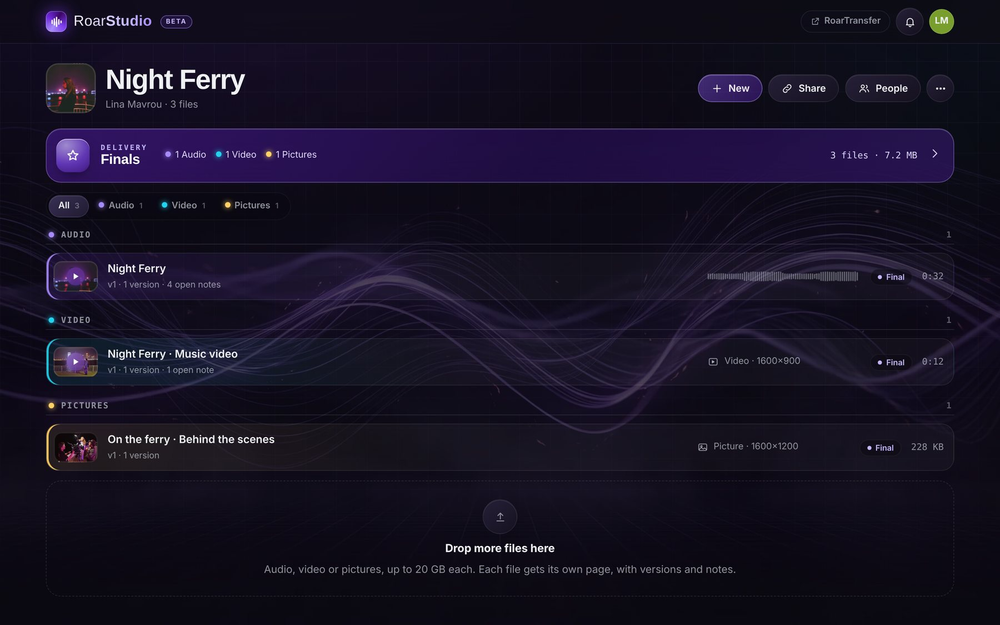
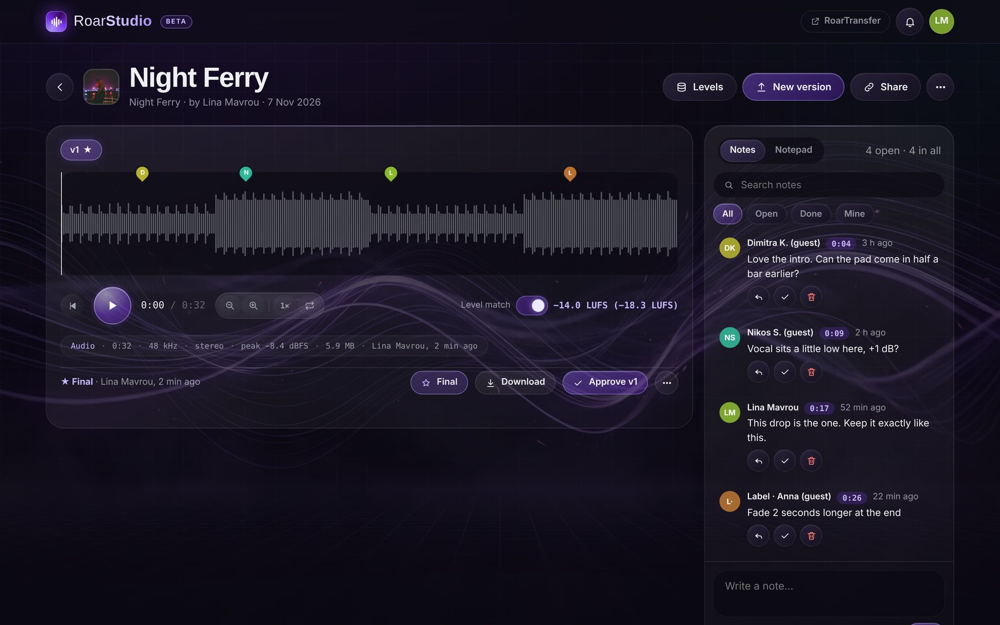
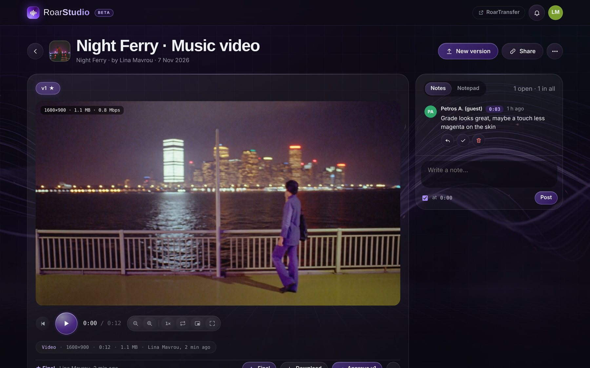
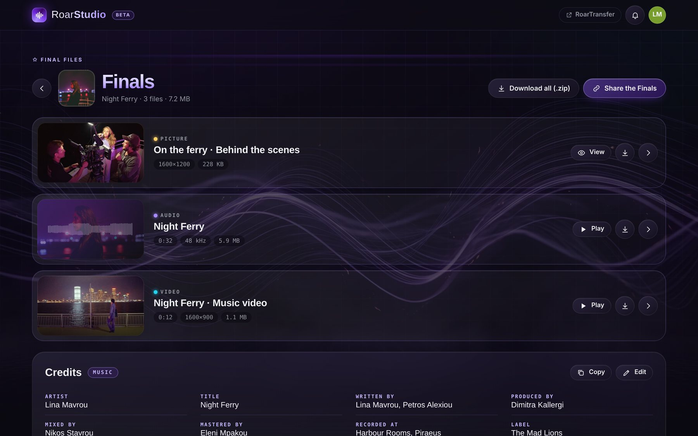
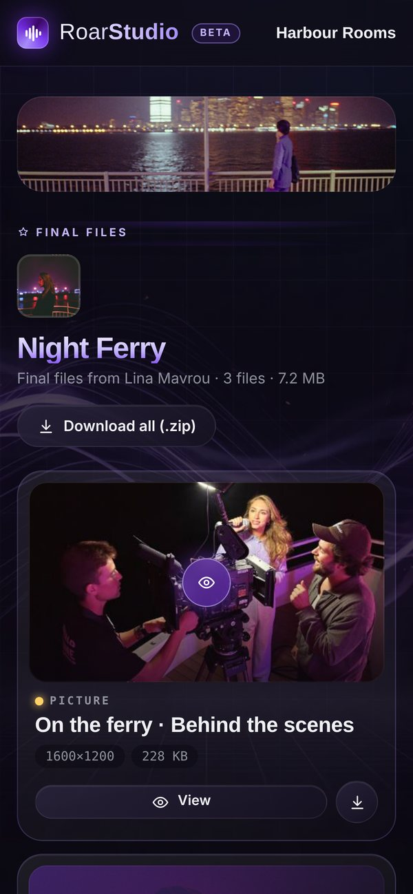
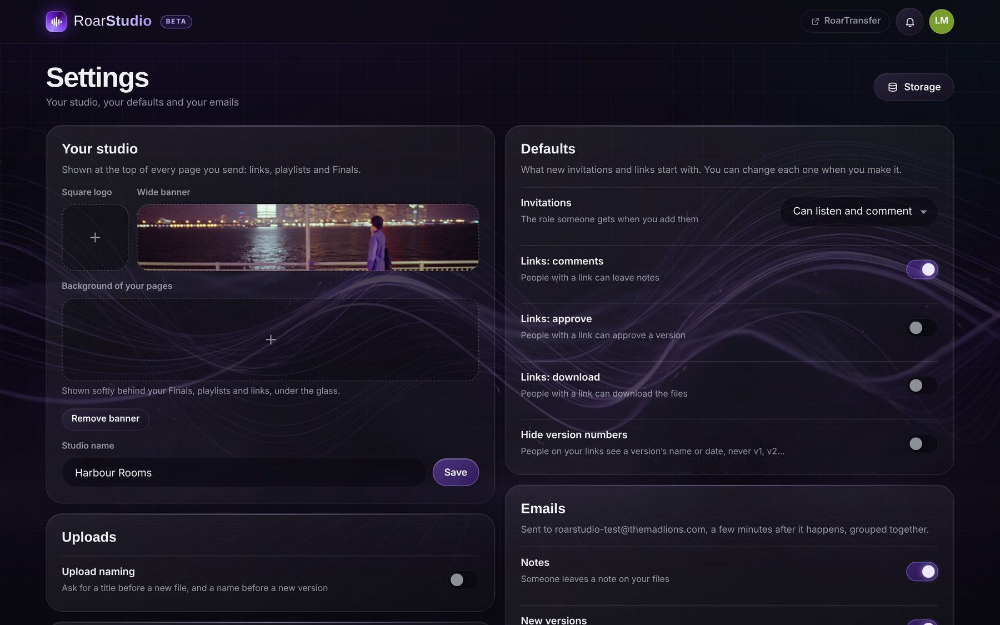
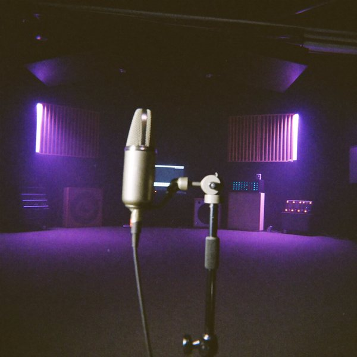
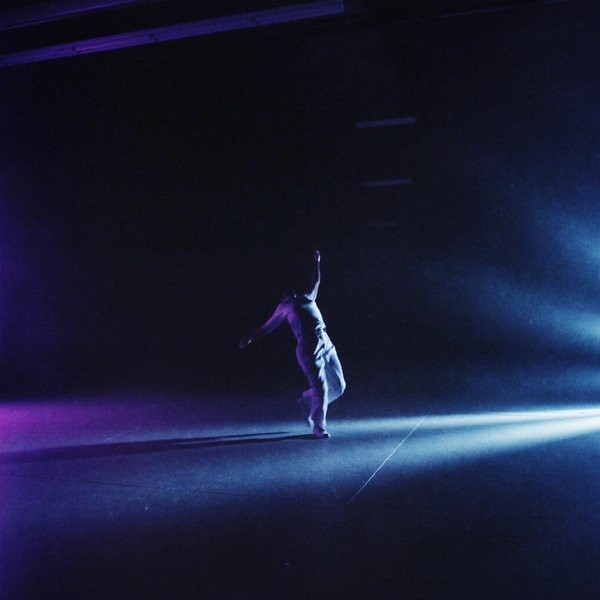

ROARTRANSFER STUDIOBeta
Review. Approve. Deliver.
The place where music, video and pictures get finished. Upload every version, let people leave notes on the exact second, match the levels, approve, then send the final files in one beautiful link, with your name on it.
Free in beta with a Roar Account · in your browser · nothing to install

Three steps, one link.
A project is a single, an album, a film or a shoot. Everything for it lives in one place, from the first rough version to the files you hand over.
Drop the files in
Songs, mixes, stems, edits, trailers, stills. Each file gets its own page; a new upload of the same file becomes v2, v3, with every older version still there.
Get notes on the second
Invite your team or send a link. People click on the waveform or the picture and write: the note sits on that exact second. Reply, tick it done, approve the version.
Make it final, deliver
Press Final on what is ready. It goes into Finals: one link with the cover, the credits, the lyrics and Download all as a zip. No account needed to open it.
Every note on the exact second.
Each file opens on its own page: a big waveform you can scrub and zoom, the notes beside it, each one a coloured pin on the timeline. Click a pin and the music jumps there.
- Versions side by side. v1, v2, v3 under one title, each with its own notes, so nothing gets lost between mixes.
- Level match in LUFS. Loudness measured to EBU R128 on every upload; turn on Level match and every version plays at the same loudness, so you judge the mix, not the volume.
- The facts, at a glance. Length, sample rate, channels, peak and size on one line, plus levels meters while it plays.
- Notes you can work through. Search them, filter open, done or mine, reply in threads, tick them done. A private Notepad sits next to them for your own list.

Not only music. Everything you make.
A music video, a teaser, a commercial, a set of stills: video plays as video and pictures show as pictures, with notes on the frame and on the second, just like a song.
- A real player. Speed, loop, zoom, picture in picture and full screen, with the size and bitrate shown on the frame.
- Grouped by kind. Audio, Video and Pictures, each with its colour, as tabs or groups, so a big project stays readable.
- Folders and playlists. Put files in folders, or make a playlist from any files and share it as its own link.

Finals, like an album sleeve.
The files you mark Final leave the work in progress behind and go into Finals: a clean page with the project's cover, wide rows for every file, and the credits underneath. It is what you send to the label, the client or the festival.
- Credits and lyrics. Templates for music (artist, writers, producer, mix, master, label, ISRC, release date), video (director, DOP, editor, colourist…) and photo, or your own roles. Lyrics and notes too, with Copy.
- Download all as a zip. Every final file in one zip, made in the browser, with the original quality and real names.
- One link, your rules. Share the Finals with an end date (1, 7 or 30 days, or never) and an optional password. Files you make final later show up in the same link.

Your client opens it on the phone.
No account, no app, no password unless you set one. Your studio's name and banner sit on top, the files play right there, and they can write a note, approve or download, as you allowed.
- Your brand, not ours. Logo, banner and a background of your own on every link, playlist and Finals page.
- You decide what a link can do. Comment, approve, download, and whether version numbers show at all.
- You see what happens. The bell shows who opened, played, downloaded, wrote or approved; an email gathers it every few minutes or once a day.

Set it up once, looks right always.
Settings hold your studio: the name and pictures on what you send, what new links and invitations start with, the emails you want, and the look you work in.
- People and roles. Add people by their Roar Account: editors upload and approve, commenters write notes, listeners only listen.
- Dark, light and backgrounds. Dark, Light or System, with a choice of backgrounds behind the glass.
- Storage, in the open. How much every project takes, by kind, on one page.

Made by people who deliver for a living.
We built RoarTransfer Studio for our own films, music videos and records at The Mad Lions. This is what it does today.
Big files, straight to the cloud
Up to 20 GB a file, sent in parts straight to Cloudflare R2, several at once, with the progress on screen.
Versions without the mess
Upload naming asks for a title or a version name if you want it; otherwise the title is the file's own name, without the ending.
Approve, then Final
Approve a version to say it is right; make it Final to deliver it. Take it out again any time, its notes stay.
Three kinds of links
A review link for the whole project, a playlist link for a chosen few, and the Finals link for delivery.
The bell and the emails
New notes, versions, approvals and downloads in the bell, and grouped in one email instead of ten.
A player that follows you
Leave the song's page and it keeps playing in the bar at the bottom, while you go through the rest.
Covers you can crop
A cover for every project, zoomed, moved, turned and cropped to a square; projects as big tiles, small tiles or a list.
One Roar Account
Sign in with the same account as RoarMe, RoarWriter and the other Roar apps, with two-step verification if you use it.
Part of RoarTransfer
RoarTransfer Studio lives at studio.roartransfer.com: one click takes you to RoarTransfer to send any file with a short link.
Artists, producers, directors, studios.
A singer sending mixes to the label, a producer collecting notes from the band, a director delivering a music video, a photographer handing over the selects. Same place, same link.


Good to know.
Do the people I send it to need an account?
No. A link opens in any browser, on a phone or a computer. Only the people who work inside your projects, as editors or commenters, sign in with a Roar Account.
Does it change my files?
No. What you upload is kept as it is, at full quality, with its real name. Downloads and the zip give back the original files.
What does it cost?
RoarTransfer Studio is free while it is in beta. You need a Roar Account, the same one as the other Roar apps.
Which files can I upload?
Audio (WAV, AIFF, FLAC, MP3, AAC and more), video (MP4, MOV and what your browser plays) and pictures (JPEG, PNG, WebP and more), up to 20 GB a file.
Is there an app to install?
No, it works in the browser on any computer or phone. Open studio.roartransfer.com and sign in.
Your next release, delivered right.
Open RoarTransfer Studio, make a project, drop the first file in. It takes a minute.
Open RoarTransfer Studio